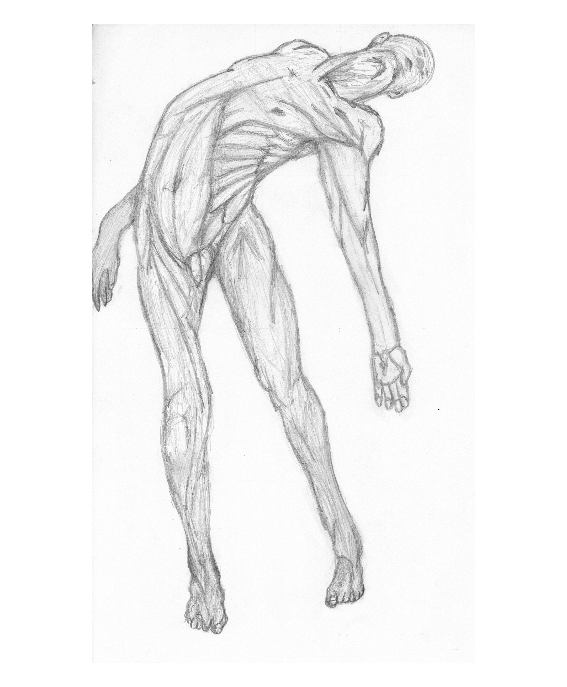
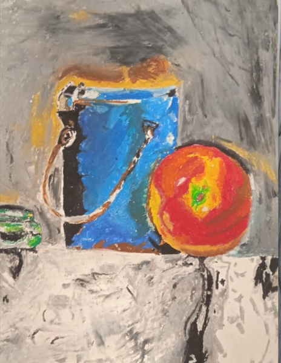
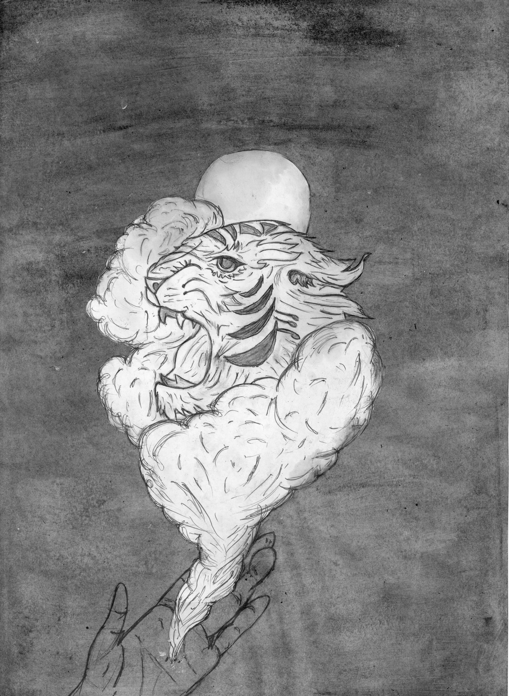

Musculatura
Desenho focado no estudo da anatomia humana e musculatura profunda. O objetivo foi explorar a torção do tronco, a tensão muscular e o caimento do corpo em uma pose de forte contração e desequilíbrio.

Desenho focado no estudo da anatomia humana e musculatura profunda. O objetivo foi explorar a torção do tronco, a tensão muscular e o caimento do corpo em uma pose de forte contração e desequilíbrio.
Desenho focado no estudo do retrato humano, pintado de forma direta da tinta da china no papel. O objetivo foi explorar o tracejado de forma realista.

Desenho de observação focado no estudo de Natureza Morta, pintado de forma direta sob o papel com pastel de óleo. O objetivo foi explorar o tracejado de forma realista, captando os volumes e texturas .

Ilustração em grafite A3 de uma criatura felina etérea formada por nuvens, emergindo sob a luz da lua e sustentada por uma mão humana, evocando fantasia, proteção e mistério.